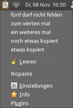
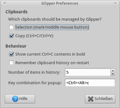

Glipper
Dieser Artikel wurde für die folgenden Ubuntu-Versionen getestet:
Ubuntu 16.04 Xenial Xerus
Ubuntu 14.04 Trusty Tahr
Zum Verständnis dieses Artikels sind folgende Seiten hilfreich:
Glipper  ist ein Programm zur Verwaltung der Zwischenablage. Es kann als eine Art GNOME-Version des Programms Klipper, welches für KDE ausgelegt ist, gesehen werden. Glipper besitzt trotz des Namens keine Abhängigkeiten von GNOME-Bibliotheken, weswegen man es ohne Probleme auch mit anderen Fenstermanagern verwenden kann.
ist ein Programm zur Verwaltung der Zwischenablage. Es kann als eine Art GNOME-Version des Programms Klipper, welches für KDE ausgelegt ist, gesehen werden. Glipper besitzt trotz des Namens keine Abhängigkeiten von GNOME-Bibliotheken, weswegen man es ohne Probleme auch mit anderen Fenstermanagern verwenden kann.
Glipper wurde lange Zeit nicht mehr aktiv entwickelt. Sollte es zu Problemen kommen, lohnt sich ein Blick auf die Alternativen. Seit Mitte 2011 gibt es allerdings Bestrebungen, Glipper mit Unity und der Benachrichtigungsanzeige von Ubuntu (Indicator applets) kompatibel zu machen.
Installation¶
Glipper ist in den offiziellen Paketquellen enthalten und kann über folgendes Paket installiert [1] werden: 
glipper (universe)
 mit apturl
mit apturl
Paketliste zum Kopieren:
sudo apt-get install glipper
sudo aptitude install glipper
Das Programm ist nach der Installation als Applet für die Symbolleiste (Panel) zu finden. Per Rechtsklick auf das Panel und dem Befehl "Zum Panel hinzufügen" steht Glipper unter der Bezeichnung "Zwischenablagenverwalter" bereit. Beim Einsatz unter Unity muss es über das Terminal gestartet [2] werden, um im Panel zu erscheinen.
Benutzung¶
 Die Funktionsweise von Glipper ist relativ einfach verständlich. Nach dem Start des Programms erscheint im System-Tray ein neues Symbol.
Klickt man auf dieses mit der linken Maustaste ( ), erscheint der Verlauf. Der Eintrag, welcher sich zur Zeit im Primary Clipboard befindet (markieren/
), erscheint der Verlauf. Der Eintrag, welcher sich zur Zeit im Primary Clipboard befindet (markieren/ ), wird von den anderen abgegrenzt dargestellt. Der Eintrag, der sich zur Zeit im Default Clipboard (
Strg +
C ,
Strg +
V ) befindet, wird blau dargestellt. Wenn man auf einen der Einträge klickt, wird dieser Eintrag der neue Inhalt der Zwischenablage.
), wird von den anderen abgegrenzt dargestellt. Der Eintrag, der sich zur Zeit im Default Clipboard (
Strg +
C ,
Strg +
V ) befindet, wird blau dargestellt. Wenn man auf einen der Einträge klickt, wird dieser Eintrag der neue Inhalt der Zwischenablage.
Wenn man auf das Icon mit der rechten Maustaste ( ) klickt, erscheint ein Popup-Menü, in welchem man unter anderem "Einstellungen" auswählen kann. Dort findet man Möglichkeiten, das Verhalten von Glipper zu ändern.
) klickt, erscheint ein Popup-Menü, in welchem man unter anderem "Einstellungen" auswählen kann. Dort findet man Möglichkeiten, das Verhalten von Glipper zu ändern.
 Übersichtsartikel
Übersichtsartikel- Erstellt mit Inyoka
-
 2004 – 2017 ubuntuusers.de • Einige Rechte vorbehalten
2004 – 2017 ubuntuusers.de • Einige Rechte vorbehalten
Lizenz • Kontakt • Datenschutz • Impressum • Serverstatus -
Serverhousing gespendet von